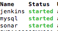

Tomcat+Jenkins+SonaQube for OSX
OSX 상에서 SonaQube에 Jeknins를 연동하여 SonaQube 코드품질 측정을 자동으로 하도록 설치하는 과정이다.
또한 Tomcat으로 SonarQube를 띄워 서버가 돌아가도록 하는 과정도 포함 하였다.
설치 순서는
mysql > SonaQube > Jenkins이다.
주의
각각의 패키지 설치는 Homebrew를 통해 진행하였다.
혹시 아직 Homebrew가 설치 돼 있지 않으면, 해당 패키지를 설치 한 후, 아래 설치를 진행한다.
mysql
mysql 설치
처음 설치 했다면 root 암호 설정
sonarQube 계정 설정을 위해 sql 실행
파일 > create_database.sql
Sonar
sonar 설치
sonar property 설정
수정부분
sonar 실행
Jenkins
Jenkins 설치
서비스 시작 확인
mysql, Sonar, Jenkins가 모두 설치 및 서비스가 실행됐는지 확인하기 위해 서비스를 확인
해당 서비스가 모두 실행중이라면 설치 완료!!

만약 mysql이 실행이 안됐다면
참고사이트
starting and stopping background services with homebrew
https://robots.thoughtbot.com/starting-and-stopping-background-services-with-homebrewInstall Jenkins
http://dolphin.ivyro.net/file/tool_etc/homebrew_jenkins.html
Install SonarQube
http://zafercelaloglu.blogspot.kr/2014/07/how-to-setup-sonar-on-mac-part-1.html
or
http://www.sonarqube.org/downloads/SoarQube Docs
http://docs.sonarqube.org/Install MySql
http://blog.joefallon.net/2013/10/install-mysql-on-mac-osx-using-homebrew/Get Swift Plugin
http://www.sonarsource.com/products/plugins/languages/swift/
if Error
http://stackoverflow.com/questions/33843378/sonar-fails-to-connect-to-mysql-on-mac-ei-caption
http://stackoverflow.com/questions/28988441/cant-acess-sonarqube-not-a-valid-locale